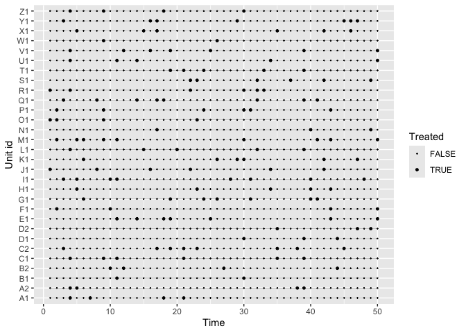
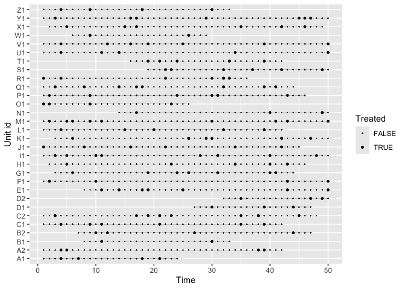
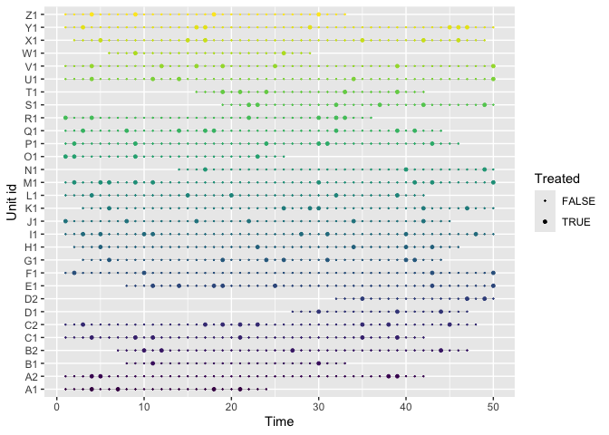

Overview
An R Package to build panels for event-study models based on a user-specified time horizon for repeated interventions
The package is co-developed by Juan Carlos Villaseñor-Derbez and Renato Molina.
Installation
Install the development version with:
# install.packages("pak")
pak::pak("jcvdav/EventHorizon")Usage
Here’s an example of how to use it
library(tidyr)
library(dplyr)
#>
#> Attaching package: 'dplyr'
#> The following objects are masked from 'package:stats':
#>
#> filter, lag
#> The following objects are masked from 'package:base':
#>
#> intersect, setdiff, setequal, union
library(EventHorizon)
# Load a panel
panel <- simulate_panel(n_units = 30, n_periods = 50)
visualize_panel(panel)
event_horizon_panel <- panel |>
mutate(treatment_id = treatment_ids(id = id, time = time, treatment = treatment, window = 3),
relative_time = calculate_relative_time(id = id, time = time, treatment_id = treatment_id, window = 3),
treatment_id = propagate_treatment_id(id = id, time = time, treatment_id = treatment_id, window = 3)) |>
drop_na(treatment_id)
visualize_panel(event_horizon_panel)
visualize_panel(event_horizon_panel, prepped = T)